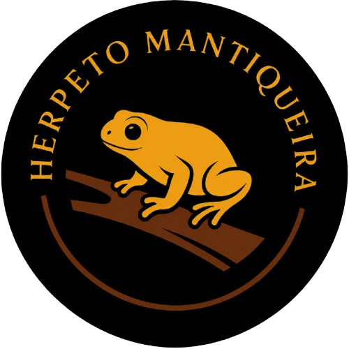
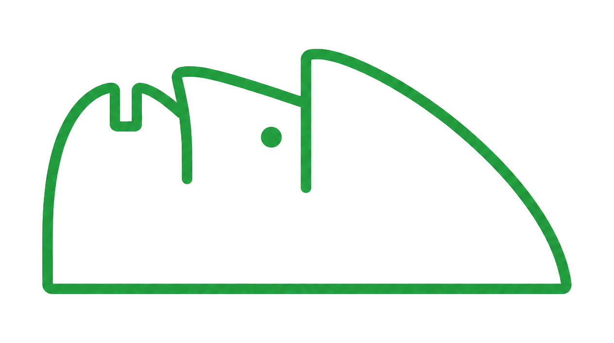
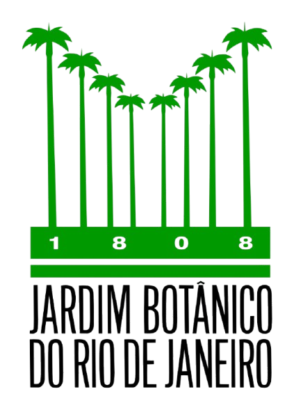
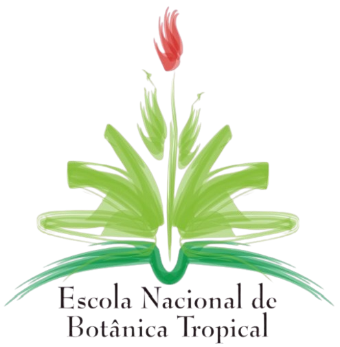

Nome cientifico
Quando o nome aparece em italico, ele representa uma identificacao biologica. Em casos como cf. ou sp., a ficha indica que a identificacao precisa ser tratada com cautela.

HerpetoMantiqueiraAlbum educativo de biodiversidade


Cruzeiro, SP · Vale Historico Paulista
Um album interativo para aproximar jovens, adultos, educadores e curiosos dos anfibios, repteis e microhabitats que ajudam a contar a historia natural de Cruzeiro.
Album vivo
As fichas abaixo sao educativas e nao substituem revisao taxonomica formal, licencas, chaves de identificacao ou orientacao tecnica. Para campo, observe sem manusear e preserve o ambiente.
Como ler
O album usa linguagem simples, mas preserva a diferenca entre nome cientifico, nome popular, grupo biologico e identificacao incerta.
Quando o nome aparece em italico, ele representa uma identificacao biologica. Em casos como cf. ou sp., a ficha indica que a identificacao precisa ser tratada com cautela.
Anfibios anuros podem vocalizar. Quando nao ha audio real carregado, a ficha mostra apenas uma visualizacao ilustrativa, marcada como tal.
Serpentes e anfibios nao devem ser capturados. Fotografar de longe, nao matar e manter distancia sao atitudes melhores para a pessoa e para o animal.
Uso destacavel
Esta pagina foi montada como uma peca independente: pode ficar dentro da HerpetoMantiqueira ou ser adaptada para uma pagina de parceiro, como RPPN, instituto, escola ou atividade de educacao ambiental.
Base cientifica
As fichas foram escritas em linguagem leiga, mas usando literatura de herpetologia, ecologia de anfibios e repteis, microhabitat, serapilheira, bromelias e conservacao. A lista abaixo combina fontes por especie, genero, grupo biologico e tema ecologico, para que todas as 18 fichas tenham apoio bibliografico real.